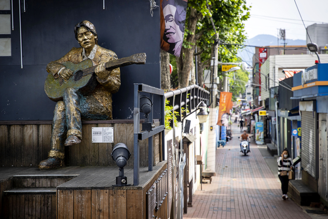
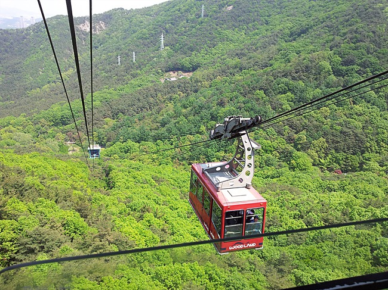
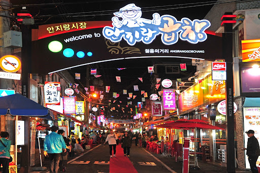
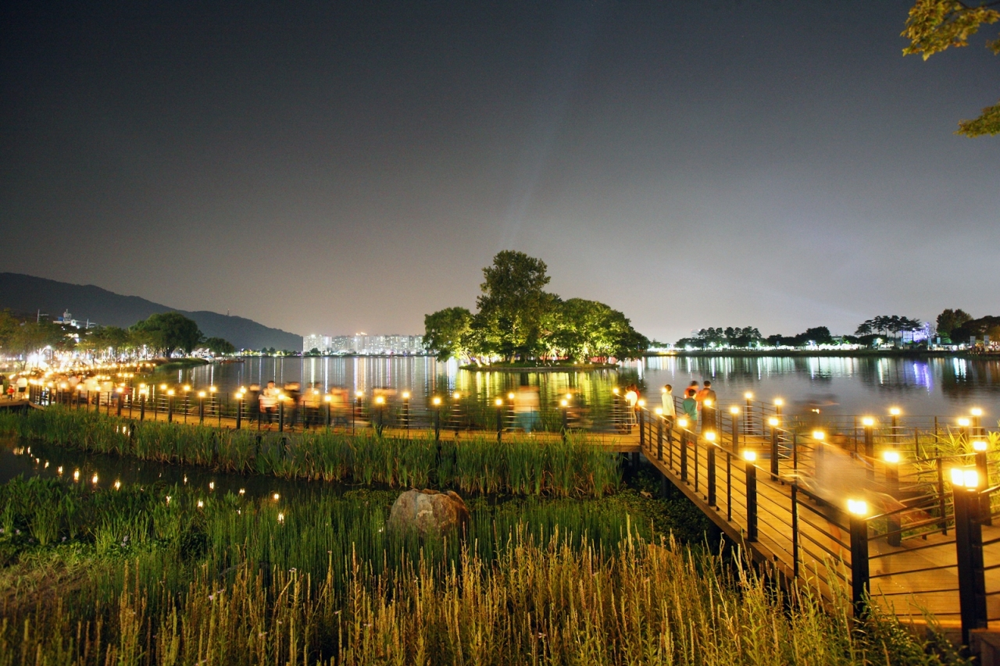

대구 여행 코스 WITH 패션이

김광석길

앞산
케이블카

안지랑
곱창골목

수성못
#김광석길 #앞산케이블카 #안지랑곱창골목 #수성못
#대구필수코스 #아름다움과맛
'잊어야 한다는 마음'을 들으며 김광석 거리를 걷다가
케이블카를 타서 앞산에 올라 대구 전경을 본 후
안지랑 곱창골목에서 곱창을 구워먹은 후
수성못의 야경을 보며 산책하는 코스
어떤가요?
자세한 정보를 얻고 싶으시다면 이미지를 클릭해보세요!